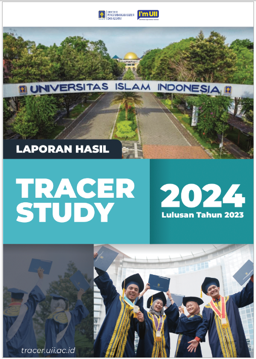
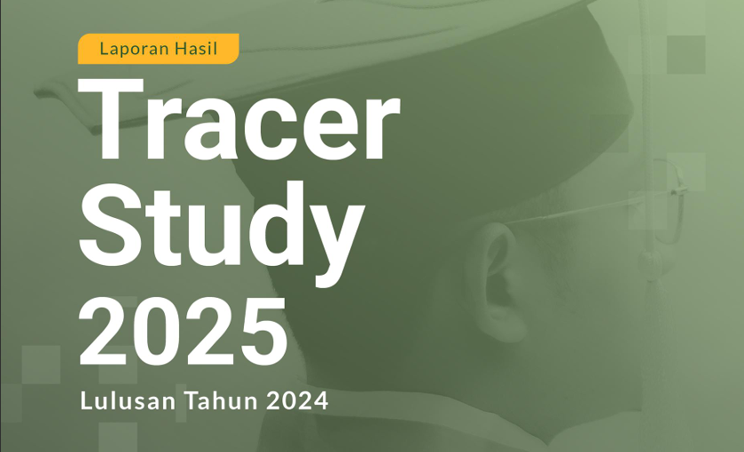
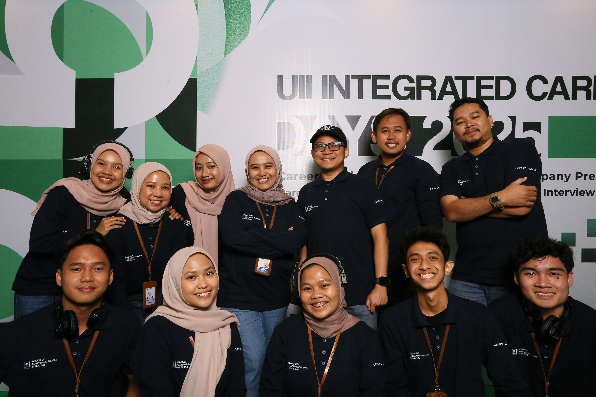

PROFESSIONAL EXPERIENCE
Career Center Universitas Islam Indonesia
Staff Data Analyst supporting institutional reporting, dashboard analytics, and academic performance evaluation.
COMPANY OVERVIEW
About The Institution
Universitas Islam Indonesia is one of Indonesia’s leading private universities. Career Center Universitas Islam Indonesia supports graduate career development and institutional reporting through data-driven career and academic services.
ROLE & DURATION
Data Analyst Staff - Student Staff
Managed tracer study analytics, institutional reporting, dashboard monitoring, and graduate outcome evaluation to support academic and career development initiatives.
Duration: November 2023 – October 2025
KEY RESPONSIBILITIES
Tracer Study
Managed tracer study data preparation, validation, response monitoring, and reporting across multiple survey cycles.
Institutional Reporting
Prepared analytical progress reports and employment evaluation insights for faculty leaders, PICs, and institutional stakeholders.
Career & Data Coordination
Collaborated with alumni, study programs, and survey teams to support effective data collection and career-related monitoring initiatives.
TOOLS & TECHNOLOGIES
KEY CONTRIBUTIONS
Large-Scale Data Monitoring
Monitored large-scale tracer study datasets and achieved response rates of 93% in 2024 and 90.75% in 2025.
Data-Driven Reporting
Developed reporting analysis and data visualizations to support institutional evaluation and strategic decision making.
Stakeholder Communication
Acted as a liaison between alumni, faculties, and surveyors to ensure reporting accuracy and effective data collection processes.
DOCUMENTATION
Work Documentation & Visuals


